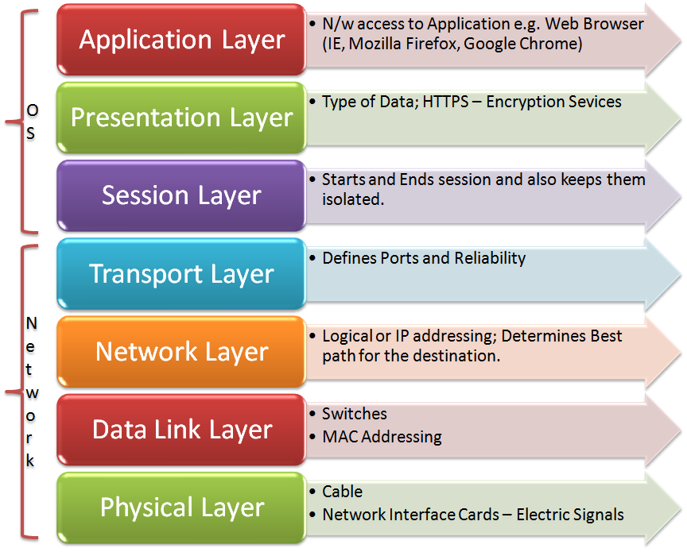

ISO-OSI
ISO-OSI stands for International Organization for Standardization Open Systems Interconnection. In 1977 OSI was an effort made to standardize computer networking by ISO1. OSI gave a coceptual product the OSI model. The OSI reference model was a major advance in the teaching of network concepts. It promoted the idea of a consistent model of protocol layers, defining interoperability between network devices and software.
History
In the late 1970s, two projects began at the same time, with the same goal: to define a unifying standard for the architecture of networking systems. One was run by the ISO, while the other was by the International Telegraph and Telephone Consultative Committee, or CCITT2. Both of them made a model and and in 1983, they mergeed the models to make a single standard model called OSI reference model. A new design was documented in ISO 7498. In this model, layers were introduced and a networking system was divided into layers. Within each layer, one or more entities implement its functionality. Each entity interacted directly only with the layer immediately beneath it, and provided facilities for use by the layer above it.
Description of Layers
The first layer is physical layer it is a direct point-to-point data connection,it defines the electrical and physical specifications of the data connection, defines the protocol for flow control, defines topology. Second layer is data link layer it is a reliable direct point-to-point data connection. It has the Media Access Control (MAC) layer, the Logical Link Control (LLC) layer. Third one is network layer and has the job of Addressing, routing and delivery of datagrams between points on a network. Fourth transport layer provides the functional and procedural means of transferring variable-length data sequences from a source to a destination host via one or more networks, while maintaining the quality of service functions. The Fifth, session layer controls the dialogues between computers, controls the Interhost communication, managing sessions between applications. Sixth layer is the presentation layer having functions Data representation, encryption and decryption, convert machine dependent data to machine independent data. Seventh, the application layer, closest to the end user, which means both the OSI application layer and the user interact directly with the software application. This layer interacts with software applications that implement a communicating component.
External Links
- [Visited On 06/11/2014] ISO
- [Visited On 06/11/2014] CCITT
- [Visited On 06/11/2014] OSI layers